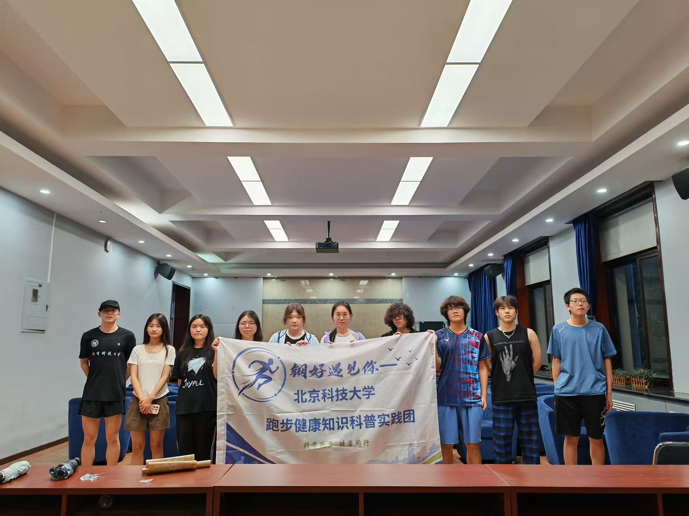

"科学跑步，健康同行——北科大走进中小学与社区"
本项目以"科学跑步，健康同行"为主题，聚焦大众跑步运动中的认知误区与健康痛点。 团队走进社区、校园，通过主题宣讲、现场答疑、动作示范等形式， 系统普及跑姿矫正、跑量规划、运动损伤预防等实用知识。 同步运营公众号与短视频平台，打造线上线下双渠道科普矩阵。
了解更多 →线上线下双渠道联动，科学跑步知识全覆盖
四大维度，量化实践成果
实践正在有序推进中，以下为最新动态
用镜头记录我们并肩走过的日子

7月10日傍晚，全体队员第一次在线下齐聚理化楼。队长熊俊豪主持会议， 队员们逐一自我介绍、破冰交流，随后共同梳理了社会实践的整体时间线、 各项任务的负责人以及近期重点推进方向。一个小时的时间里，大家从线上网友 变成了并肩作战的战友，目标更清晰，信心也更足了。
← 左右滑动卡片，认识每一位队员 →
14天，每一步都值得铭记
点击卡片查看详情（资料持续更新中…）